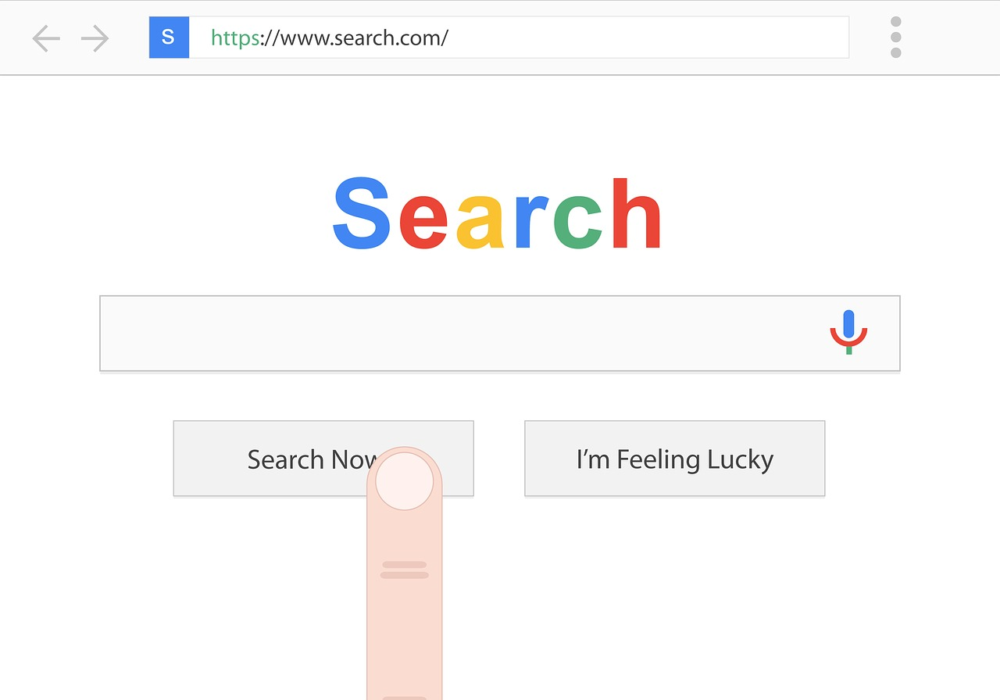
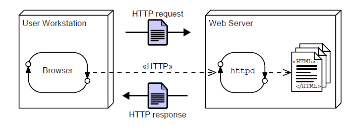
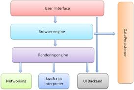
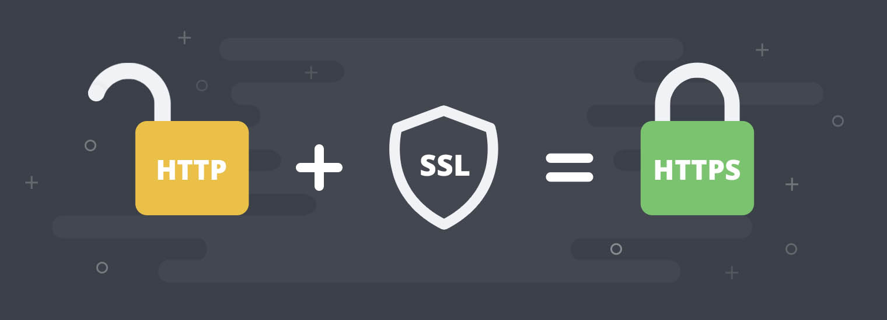

Navegadores
Los navegadores web han ido ganando importancia hasta ser, probablemente, las aplicaciones de software que más usamos cotidianamente y en las que más tiempo invertimos, porque se han convertido en la puerta de acceso a toda una serie de servicios que queramos como: correo electrónico, agenda, redes sociales, prensa digital, vídeos on-line, mapas, compra electrónica, ofertas y cupones, viajes, consultas en foros o blogs, banca electrónica, entradas para eventos, trámites con la administración, consulta y entrega del IRPF y otros impuestos, almacenamiento en la nube, descargas, trabajo colaborativo, trámites universitarios, compra de música y un largo etcétera.
¿Qué es un Navegador Web?
Un navegador web es un Software que permite el acceso a internet (por lo general gratuito) permitiendo la visualización de páginas web, para esto interpreta la información de archivos etiquetados en HTML y los presenta en pantalla según las directrices de presentación codificadas en una hoja de estilos CSS (del inglés Cascading Style Sheet, u hoja de estilo en cascada), permitiéndonos interactuar con su contenido o navegar hacia otros lugares, si ese fuera el caso.Diferencias con un Buscador
Antes adentrar más en el tema de los navegadores web sus cualidades, tenemos que tener clara la diferencia existente entre un navegador y un buscador. Ya que en muchas ocasiones llega a generar confusión.
Lo primero es definir el concepto de buscador: los buscadores son las plataformas que emplean los navegadores para realizar búsquedas y navegar vía web, siendo los más conocidos Google o Bing. Dependiendo de nuestra búsqueda aparecerán una serie de resultados, estos resultados nos aparecen por los algoritmos utilizados por los buscadores.
Teniendo esto en cuenta diferencia entre estos términos que podrían llegar a ocasionarnos confusión, podemos resumir la diferencia a lo siguiente “sí los exploradores o navegadores son nuestra ventana al océano de la Internet, los buscadores o motores de búsqueda son nuestra guía en dicho océano”.

Origenes
El primer navegador se originó en el CERN a finales de 1990 y principios de 1991 por Tim Berners-Lee, el navegador web llamado WorldWideWeb, era bastante sofisticado y gráfico, pero sólo funcionaba en estaciones NeXT.
Luego estuvo Mosaic, que funcionaba inicialmente en entornos UNIX sobre X11, fue el primero que se extendió debido a que pronto el NCSA preparó versiones para Windows y Macintosh. Sin embargo, poco más tarde entró en el mercado Netscape Navigator que rápidamente superó en capacidades y velocidad a Mosaic. Este navegador tiene la ventaja de funcionar en casi todos los UNIX, así como en entornos Windows.
Internet Explorer (anteriormente Spyglass Mosaic) fue la apuesta tardía de Microsoft para entrar en el mercado y hoy en día ha conseguido desbancar al Netscape Navigator entre los usuarios de Windows. En los últimos años se ha vivido una auténtica explosión del número de navegadores, que ofrecen cada vez mayor integración con el entorno de ventanas en el que se ejecutan. Netscape Communications Corporation liberó el código fuente de su navegador, naciendo así el proyecto Mozilla, y el resto de la historia es lo que ya conocemos la explosión de Google Chrome que hasta ahora sigue siendo el rey de los navegadores.
El primer navegador se originó en el CERN a finales de 1990 y principios de 1991 por Tim Berners-Lee, el navegador web llamado WorldWideWeb, era bastante sofisticado y gráfico, pero sólo funcionaba en estaciones NeXT.
Luego estuvo Mosaic, que funcionaba inicialmente en entornos UNIX sobre X11, fue el primero que se extendió debido a que pronto el NCSA preparó versiones para Windows y Macintosh. Sin embargo, poco más tarde entró en el mercado Netscape Navigator que rápidamente superó en capacidades y velocidad a Mosaic. Este navegador tiene la ventaja de funcionar en casi todos los UNIX, así como en entornos Windows.
Internet Explorer (anteriormente Spyglass Mosaic) fue la apuesta tardía de Microsoft para entrar en el mercado y hoy en día ha conseguido desbancar al Netscape Navigator entre los usuarios de Windows. En los últimos años se ha vivido una auténtica explosión del número de navegadores, que ofrecen cada vez mayor integración con el entorno de ventanas en el que se ejecutan. Netscape Communications Corporation liberó el código fuente de su navegador, naciendo así el proyecto Mozilla, y el resto de la historia es lo que ya conocemos la explosión de Google Chrome que hasta ahora sigue siendo el rey de los navegadores.
Funcionamieto Básico
Como ya sabemos, la función básica de un navegador es la de visualizar unos documentos denominados páginas web (compuestos tanto de texto como de todo tipo de elementos multimedia), que pueden estar almacenados en la computadora del usuario u ordenadores remotos conectados a Internet con un software especial para permitir el acceso, (denominados servidores), y a los que se accede mediante un protocolo (conjunto de reglas y normas que permiten la intercomunicación de dispositivos) conocido como HTTP (Hypertext Transfer Protocol, o Protocolo de transferencia de hipertexto).Además del HTTP, la mayoría de navegadores soporta otros protocolos adicionales, como FTP (File Transfer Protocol, o Protocolo de transferencia de ficheros) o HTTPS (Hypertext Transfer Protocol Secure, o Protocolo seguro de Transferencia de hipertexto).
Todo este conjunto de protocolos de aplicación se apoya en el TCP (Transmission Control Protocol, o Protocolo de Control de Transmisión), que es el responsable de crear la conexión entre el ordenador del usuario y el servidor y de garantizar que los datos serán entregados en destino sin errores y en un orden idéntico al que fueron transmitidos. También gestiona los distintos puertos de comunicación de cada máquina.
Cada máquina conectada a Internet tiene una dirección IP (Internet Protocol, o Protocolo de Internet) única que la identifica. Cuando escribimos una dirección web o URL (Uniform Resource Locator, o localizador uniforme de recursos), otras máquinas denominadas servidores DNS (Domain Name System, o Sistema de Nombres de Dominio) traducen o asignan el nombre de dominio que hemos escrito (por ejemplo, www.ua.es) a su dirección IP (que, en el caso de la UA, es 193.145.233.8), lo que permite al navegador encontrar el servidor de destino y pedirle el recurso solicitado.
 ¿Cómo se da el proceso que permite visualizar el contenido almacenado (Ciclo de solicitud- respuesta HTTP)?
- 1. Todo comienza cuando escribimos la URL en la barra de direcciones del navegador.
- 2. Un servidor de nombres DNS busca la página que hemos escrito, averigua su dirección IP y la devuelve al navegador.
- 3. El ordenador o dispositivo del usuario envía una solicitud al servidor identificado por la dirección IP y espera respuesta.
- a) Si todo va bien, el servidor envía un breve mensaje de retorno al navegador indicando que todo está correcto (transacciones HTTP), seguido del contenido de la propia página web.
- b) Si hay problemas, el servidor envía al navegador un código de error HTTP que identifica la naturaleza del problema (el más conocido es el error 404: "no se encuentra la página").
Funcionamieto BásicoSimplificando mucho, y prescindiendo de mayores detalles técnicos, podemos decir que las principales partes de un navegador web moderno son:- La Interfaz de usuario - Un layout engine o motor de renderizado (el verdadero núcleo del navegador). - Un JavaScript engine o intérprete JavaScript. |
 |
Complementos
Otra característica interesante en los navegadores son los complementos (plug-ins, add-ons o extensiones) es una aplicación secundaria o subordinada a otra aplicación principal, a la que aporta funcionalidades nuevas y específicas, y con la que se comunica a través de la API (Application Programming Interface o Interfaz de programación de aplicaciones), misma que es la que permite a terceros desarrollar aplicaciones que interactúen de forma estable con la aplicación principal.
En los navegadores web, los complementos suelen extender o ampliar las funcionalidades del navegador para visualizar distintos contenidos multimedia o interactivos, como PDFs, audio o vídeo, o añadir funciones más complejas, como Java. De hecho, como ejemplo siempre se puede dar al Popular Adobe Flash Player (aunque ya están por sacarlo de línea) que permite visualizar aplicaciones interactivas o incluso videos FLV.
Aunque como todo, los complementos tienen si lado negativo como que pueden ralentizar el funcionamiento del navegador, causando incluso su cuelgue total, o que pueden presentar problemas de seguridad o vulnerabilidades, o incluso fallas como incompatibilidad con otros complementos o hacer trabajar de más a la máquina.
Otra característica interesante en los navegadores son los complementos (plug-ins, add-ons o extensiones) es una aplicación secundaria o subordinada a otra aplicación principal, a la que aporta funcionalidades nuevas y específicas, y con la que se comunica a través de la API (Application Programming Interface o Interfaz de programación de aplicaciones), misma que es la que permite a terceros desarrollar aplicaciones que interactúen de forma estable con la aplicación principal.
En los navegadores web, los complementos suelen extender o ampliar las funcionalidades del navegador para visualizar distintos contenidos multimedia o interactivos, como PDFs, audio o vídeo, o añadir funciones más complejas, como Java. De hecho, como ejemplo siempre se puede dar al Popular Adobe Flash Player (aunque ya están por sacarlo de línea) que permite visualizar aplicaciones interactivas o incluso videos FLV.
Aunque como todo, los complementos tienen si lado negativo como que pueden ralentizar el funcionamiento del navegador, causando incluso su cuelgue total, o que pueden presentar problemas de seguridad o vulnerabilidades, o incluso fallas como incompatibilidad con otros complementos o hacer trabajar de más a la máquina.
La seguridad en la navegación
El protocolo HTTPS (Hypertext Transfer Protocol Secure, o protocolo HTTP seguro) garantiza que las sesiones de navegación están cifradas, por lo que la transferencia de datos es segura.Sabremos que nos encontramos en navegación segura, cuando en la barra de navegación estén las siglas https. Es fundamental que te encuentres dentro de una sesión segura cuando introduzcas o manejes datos sensibles, como datos bancarios, académicos o de compras, sino jamás se deben introducir datos.

En conclusión...
La web vivió unos primeros años de desarrollo frenético gracias a la competencia entre Netscape e Internet Explorer. Los años han pasado y ahora existen distintos navegadores y la competencia sigue, además los navegadores ahora son de las principales aplicaciones que usamos cotidianamente. Estas aplicaciones son la base para movernos entre la red, de ahí que sean indispensables ya que junto con los buscadores nos llevan a donde queramos o más bien a donde busquemos; y bien no hay que confundir a los buscadores con los navegadores, pues los buscadores nos brindan las direcciones de las paginas mientras que los navegadores son los que nos muestran todo el contenido de dicha página.Y bueno los navegadores tienen un montón de características, y diversos protocolos aunque aquí solo se vio lo básico, cada día los navegadores van haciéndose más veloces, soportando más contenido y nuevo tipo de contenido, los complementos siempre son aplicaciones interesantes para complementar funciones de nuestro navegador, y como es que se logran conexiones seguras para los distintos trámites comerciales, el mundo de los navegadores es muy interesante.

Fuentes:
- Universidad de alicante. (s. f.). Navegadores. RUA. https://rua.ua.es/dspace/bitstream/10045/46501/3/ci2_basico_2014-15_Navegadores.pdf
- EcuRed. (s. f.). Navegadores Web. EcuRed. https://www.ecured.cu/Navegador_web
- Javier Pastor. (2019). Navegadores web que arrasaron: primero Netscape, luego Internet Explorer y por último Chrome, así ha sido la evolución desde 1996. Xataka. https://www.xataka.com/aplicaciones/navegadores-web-que-arrasaron-primero-netscape-luego-internet-explorer-ultimo-chrome-asi-ha-sido-evolucion-1996
- Diego Melús. (2019). Los 5 mejores navegadores web que puedes usar en tu día a día. Nerion. https://www.nerion.es/blog/los-5-mejores-navegadores-web/
- Sinstes, Bartolomé. (2020). Historia de la web: los navegadores. MCLibre. https://www.mclibre.org/consultar/htmlcss/otros/historia-navegadores.html
- Isolated. (2018). ¿Qué diferencia hay entre un navegador y un buscador? Isolated. https://www.isolated.es/blog/diferencia-entre-navegador-y-buscador/